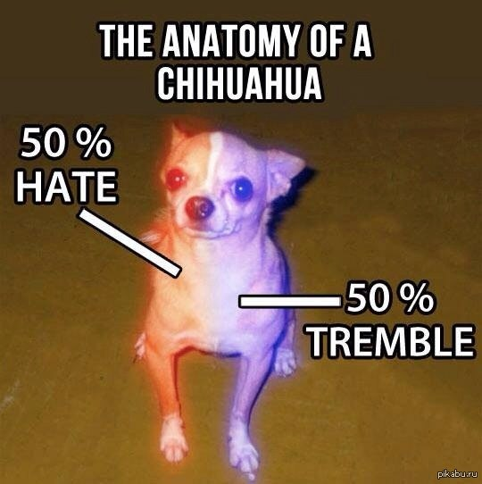

df df
Заметим, что схожий результат с Netscape показывает и браузер
Opera, но, как видно на рис. 1, в последующих версиях
этот недостаток был устранен подход разработчиков
этого браузера был изменен.
Основной текст. Текст между двумя тегами — открывающим и закрывающим.

| Россия | Великобритания | Европа | Длина ступни, см |
|---|---|---|---|
| 34,5 | 3,5 | 36 | |
| 35,5 | 4 | 36⅔ | 23–23,5 |
| 36 | 4,5 | 37⅓ | 23,5 |
| 36,5 | 5 | 38 | 24 |
| 37 | 5,5 | 38⅔ | 24,5 |
| 38 | 6 | 39⅓ | 25 |
| 38,5 | 6,5 | 40 | 25,5 |
| 39 | 7 | 40⅔ | 25,5–26 |
| 40 | 7,5 | 41⅓ | 26 |
| 40,5 | 8 | 42 | 26,5 |
| 41 | 8,5 | 42⅔ | 27 |
| 42 | 9 | 43⅓ | 27,5 |
| 43 | 9,5 | 44 | 28 |
| 43,5 | 10 | 44⅔ | 28–28,5 |